Components#
Every GitLab CI component Preflight ships, with its include example, its inputs and their defaults, and the jobs and timeouts each template defines. Add one include to your app's .gitlab-ci.yml, then follow the per-component guide for setup. Like a real pre-flight check, the point is to find the fault on the ground, where it is cheap to fix.

The checklist, item by item, with each item's job and timeout read from templates/:
| # | Item | Job | Timeout |
|---|---|---|---|
| 1 | PROCTOR | proctor |
30 minutes |
| 2 | PHP tests, 8.3, 8.4 and 8.5 | php-test, one job per version |
30 minutes |
| 3 | Composer audit | composer-audit |
30 minutes |
| 4 | SBOM | sbom |
30 minutes |
| 5 | Pint | pint |
10m |
| 6 | PHPStan | phpstan |
10m |
| 7 | ESLint and Prettier | eslint |
15m |
The card runs the seven above and a11y:
| # | Item | Job | Timeout |
|---|---|---|---|
| 8 | Accessibility, WCAG 2.1 AA by default | a11y |
30 minutes |
The panel below the lamps lists all fifteen components, two columns of names. The seven with no card row, because they guard something other than the code on every push (a deploy kit, the image, a release, a schedule), are:
| Component | What it proves | Job | Timeout | Since |
|---|---|---|---|---|
secret-detection |
No committed secret in the checked-out tree | secret-detection |
30 minutes | 0.2.0 |
squire-kit |
The Squire deploy kit matches its release | squire-kit |
10 minutes | 0.2.0 |
portability |
The image runs off Citadel: strict boot, six portability checks and the image's own HEALTHCHECK (0.6.0); setup_command runs once before the replicas start (0.7.0); session_header sends one Name: $VARIABLE header on every session-hop request, read from the job's environment and never printed (0.8.0) |
portability |
30 minutes | 0.2.0 (one-job form) |
npm-audit |
No npm advisory at or above audit_level (high by default) in runtime dependencies |
npm-audit |
10 minutes | 0.5.0 |
mysql56-migrate |
Migrations run on MySQL 5.6.51, Citadel's shared server | mysql56-migrate |
30 minutes | 0.6.0 |
package-publish |
A tag publishes the package to the instance's registry | package-publish |
30 minutes | 0.1.1 |
renovate |
Scheduled dependency bumps, reviewed before they merge | renovate |
1 hour | 0.1.1 |
Every job the templates define is interruptible: true. Every component takes a job_name input whose default is the job's usual name; set it when one project includes the same component more than once.
The inputs contract#
The inputs and job names on this page are a promise, written down in contract/inputs.json: every input's name, type, default and allowed pattern, and every job each component adds. Preflight's own build fails when a template drifts from it (tests/ComponentsContractTest.php in composer ci, and the contract job), so a change reaches a tag only on purpose, with the file rewritten by composer contract:update in the same commit. An input or job is renamed or removed only in a release whose Upgrading section lists it under Breaking; before 1.0 that is a new minor, never a patch. To see exactly what moved between your pin and the next tag:
git diff 0.7.0 0.8.0 -- contract/inputs.json
The inputs contract has the whole story: what counts as breaking, why defaults still move, and how to read the diff.
proctor#
Runs vendor/bin/proctor check --format=codequality and publishes the result as a GitLab Code Quality report. The job installs the app's dependencies with composer install --no-plugins --no-scripts --ignore-platform-reqs, so the app's plugins and scripts never run inside the job, and an app locked to an older PHP or needing an extension the image lacks still gets its report.
include:
- component: $CI_SERVER_FQDN/enterprise-apps/preflight/proctor@28d9c5994d06c633850d431dcf6ca56c48a96055 # 0.8.0
inputs:
proctor_command: vendor/bin/proctor check --format=codequality
| Input | Type | Default | What it does |
|---|---|---|---|
stage |
string | test |
Pipeline stage for the job. |
job_name |
string | proctor |
Name of the job. Set it when you include this component more than once. |
image |
string | php:8.4-cli-trixie@sha256:9cf851bc2c1b37c3e59dfd677a3c3e56d485af5a47c93f629424bb039eafcb69 |
Docker image for the job. |
image_prefix |
string | ${CI_DEPENDENCY_PROXY_GROUP_IMAGE_PREFIX} |
Registry path in front of image: the job pulls image_prefix/image. The default is the group's GitLab Dependency Proxy, so Docker Hub is asked once and GitLab serves the cached copy. Outside a group with the proxy, set docker.io. No trailing slash. |
composer_version |
string | 2.11.1 |
Composer version to install, 2.9.6 or later. |
allow_failure |
boolean | false |
Whether the job can fail without failing the pipeline. |
proctor_command |
string | vendor/bin/proctor check --format=codequality |
The proctor command to run. |
working_dir |
string | . |
Directory to run the command in, relative to the project root. |
git_depth |
string | "0" |
How many commits the job clones (GitLab's GIT_DEPTH); the default 0 clones the full history, so PROCTOR's override-approver check can see who wrote each override. |
From templates/proctor/template.yml: the single job (named by job_name) runs in the test stage by default, is interruptible: true, and has a timeout of 30 minutes. It installs Composer with the official getcomposer.org installer, verifies the installer's SHA-384 against composer.github.io/installer.sig, and pins the installed version to composer_version. It then runs composer install --no-interaction --no-progress --no-plugins --no-scripts --ignore-platform-reqs, so the app's plugins and scripts never run with the job's access and the app's PHP version and extensions are not required. The command's output goes through a plain redirect (not tee) to gl-code-quality-report.json at the project root, which keeps PROCTOR's exit code as the job result and gives the artifact the same path for every working_dir, including .. The report is published as a Code Quality report with when: always. Before the command runs, a guard adds --record "$CI_PROJECT_DIR/proctor.json" when the command is a plain proctor check line (letters, digits, spaces and / . _ = : , @ % + - only, no --record of its own) and the app's PROCTOR lists --record in its help (0.11.0 and later); the guard reads the command from the job variable PREFLIGHT_PROCTOR_COMMAND and cannot change the job's result. The artifact keeps proctor.json (paths, expire_in: 30 days), PROCTOR's JSON report for Rollcall's ROLLCALL_PROCTOR_SOURCE=gitlab reader; on PROCTOR 0.10.0 or older no file is written and the runner only warns.
php-test#
Runs the test command on each supported PHP version through parallel:matrix.
include:
- component: $CI_SERVER_FQDN/enterprise-apps/preflight/php-test@28d9c5994d06c633850d431dcf6ca56c48a96055 # 0.8.0
inputs:
test_command: vendor/bin/phpunit
| Input | Type | Default | What it does |
|---|---|---|---|
stage |
string | test |
Pipeline stage for the jobs. |
job_name |
string | php-test |
Name of the job. Set it when you include this component more than once. |
image |
string | php:${PHP_VERSION}-cli-trixie |
Docker image for the jobs. The default carries the literal ${PHP_VERSION}, which GitLab expands in the image at job time. |
image_prefix |
string | ${CI_DEPENDENCY_PROXY_GROUP_IMAGE_PREFIX} |
Registry path in front of image: the job pulls image_prefix/image. The default is the group's GitLab Dependency Proxy, so Docker Hub is asked once and GitLab serves the cached copy. Outside a group with the proxy, set docker.io. No trailing slash. |
php_versions |
array | ["8.3", "8.4", "8.5"] |
PHP versions to test against. |
php_advisory_version |
string | "" |
One more PHP version tested in a separate <job_name>-advisory job that may fail (allow_failure: true), for a release candidate. Empty: no advisory job. Never add a release candidate to php_versions. |
composer_version |
string | 2.11.1 |
Composer version to install, 2.9.6 or later. |
test_command |
string | vendor/bin/phpunit |
The test command to run. |
working_dir |
string | . |
Directory to run the command in, relative to the project root. |
From templates/php-test/template.yml: one job is created per entry in php_versions through parallel:matrix; PHP_VERSION becomes a CI/CD variable in each job, which the image input's default expands, and each job runs the newest patch release of its version. The default image is deliberately tag-pinned (the template points at the README section Updating image pins). Each job installs Composer the same way as proctor, runs composer install --no-interaction --no-progress, and then the test command. The jobs are interruptible: true with a timeout of 30 minutes.
Caching#
The jobs always cache Composer downloads in .composer-cache/ so repeat runs do not re-download every package. The cache key is fixed per PHP version, not a composer.lock hash, so a lock change downloads only the packages that changed and each PHP version gets its own cache. The template sets COMPOSER_CACHE_DIR to $CI_PROJECT_DIR/.composer-cache, uses the fixed key preflight-php-${PHP_VERSION}, caches the path .composer-cache/, and uses the policy pull-push.
Try the next PHP release without breaking the pipeline#
Include php-test a second time for the release that is not supported yet, name that job, and let it fail. The name is what lets your own .gitlab-ci.yml loosen only that job:
include:
- component: $CI_SERVER_FQDN/enterprise-apps/preflight/php-test@<full commit SHA> # <tag>
inputs:
php_versions: ["8.6"]
job_name: php-test-next
# While 8.6 only has release candidate images, name the tag: php:${PHP_VERSION}-rc-cli-trixie
# image: "php:${PHP_VERSION}-rc-cli-trixie"
php-test-next:
allow_failure: true
A red php-test-next job is an early warning, not a stop. Drop the allow_failure and move the version into the main php_versions list once the release is supported (the supported versions follow policy.json).
composer-audit#
Runs composer audit --locked and fails on advisories.
include:
- component: $CI_SERVER_FQDN/enterprise-apps/preflight/composer-audit@28d9c5994d06c633850d431dcf6ca56c48a96055 # 0.8.0
inputs:
working_dir: .
| Input | Type | Default | What it does |
|---|---|---|---|
stage |
string | test |
Pipeline stage for the job. |
job_name |
string | composer-audit |
Name of the job. Set it when you include this component more than once. |
image |
string | composer:2.11.1@sha256:8de2184c6de224f4689e8f80ed5f5edaf0030b6b8b7839a22a2bcb6722ac87d0 |
Docker image for the job. |
image_prefix |
string | ${CI_DEPENDENCY_PROXY_GROUP_IMAGE_PREFIX} |
Registry path in front of image: the job pulls image_prefix/image. The default is the group's GitLab Dependency Proxy, so Docker Hub is asked once and GitLab serves the cached copy. Outside a group with the proxy, set docker.io. No trailing slash. |
working_dir |
string | . |
Directory to run composer audit in, relative to the project root. |
abandoned |
string | fail |
How composer audit treats abandoned packages: fail (default), report (list them, do not fail) or ignore. |
From templates/composer-audit/template.yml: the Composer image (composer:2.11.1, pinned by digest) already ships Composer, so there is no install step. The job runs composer audit --locked with --abandoned set to the abandoned input (fail by default, report or ignore to relax the abandoned check), which exits non-zero when it finds advisories, and fails the job. There is no allow_failure input: advisories must fail. The job is interruptible: true with a timeout of 30 minutes.
Run it on a schedule#
New advisories are published after code is merged, so a green pipeline today can be stale tomorrow. Create a weekly pipeline schedule on the default branch: project settings, Build, Pipeline schedules. The component needs nothing extra; it carries no rules: block, so it runs in scheduled pipelines like any other. Creating the schedule is a project setting, not a file in the app's repo, and someone with Maintainer rights on the app must do it. It is the one preflight check that books its own flight time.
npm-audit#
Runs npm audit on the app's package-lock.json and fails on advisories at or above audit_level in runtime dependencies, then prints a full report with dev dependencies that never fails. New in 0.5.0; 0.4.0 does not include it.
include:
- component: $CI_SERVER_FQDN/enterprise-apps/preflight/npm-audit@28d9c5994d06c633850d431dcf6ca56c48a96055 # 0.8.0
inputs:
audit_level: high
| Input | Type | Default | What it does |
|---|---|---|---|
stage |
string | test |
Pipeline stage for the job. |
job_name |
string | npm-audit |
Name of the job. Set it when you include this component more than once. |
image |
string | node:22.13-alpine@sha256:e2b39f7b64281324929257d0f8004fb6cb4bf0fdfb9aa8cedb235a766aec31da |
Docker image for the job (the eslint component's pin). |
image_prefix |
string | ${CI_DEPENDENCY_PROXY_GROUP_IMAGE_PREFIX} |
Registry path in front of image: the job pulls image_prefix/image. The default is the group's GitLab Dependency Proxy, so Docker Hub is asked once and GitLab serves the cached copy. Outside a group with the proxy, set docker.io. No trailing slash. |
working_dir |
string | . |
Directory that holds package-lock.json, relative to the project root. |
audit_level |
string | high |
Lowest severity that fails the job: low, moderate, high or critical; medium (CREED's and Composer's word) means moderate. |
omit_dev |
boolean | true |
Whether the failing audit leaves dev dependencies out. The full report always lists them. |
From templates/npm-audit/template.yml: with no package-lock.json (or npm-shrinkwrap.json) the job prints "nothing to audit" and passes. Otherwise it runs npm audit --omit=dev --audit-level=<audit_level> --audit=true --offline=false and keeps npm's exit code; the two flags stop an .npmrc with audit=false or offline=true from faking a pass. An unreachable registry fails the job with a message saying so. Nothing is installed. The cache is the app's own (key npm, path .cache/npm/, policy: pull). There is no allow_failure input. The job is interruptible: true with a timeout of 10 minutes. The npm-audit component has the severity map and the proof.
sbom#
Generates a CycloneDX SBOM with cyclonedx/cyclonedx-php-composer, validates it, and publishes it as an artifact. The plugin is installed globally, so the app's composer.json is never touched.
include:
- component: $CI_SERVER_FQDN/enterprise-apps/preflight/sbom@28d9c5994d06c633850d431dcf6ca56c48a96055 # 0.8.0
inputs:
output: sbom.cdx.json
| Input | Type | Default | What it does |
|---|---|---|---|
stage |
string | test |
Pipeline stage for the job. |
job_name |
string | sbom |
Name of the job. Set it when you include this component more than once. |
image |
string | composer:2.11.1@sha256:8de2184c6de224f4689e8f80ed5f5edaf0030b6b8b7839a22a2bcb6722ac87d0 |
Docker image for the job. |
image_prefix |
string | ${CI_DEPENDENCY_PROXY_GROUP_IMAGE_PREFIX} |
Registry path in front of image: the job pulls image_prefix/image. The default is the group's GitLab Dependency Proxy, so Docker Hub is asked once and GitLab serves the cached copy. Outside a group with the proxy, set docker.io. No trailing slash. |
omit_dev |
boolean | true |
Whether to omit dev dependencies from the SBOM. |
output |
string | sbom.cdx.json |
Path of the SBOM file to publish, relative to the project root. |
From templates/sbom/template.yml: the job runs composer install --no-interaction --no-progress --prefer-dist --no-scripts --ignore-platform-reqs (the app's scripts never run, and its PHP version and extensions are not required), allows the plugin globally with composer global config --no-plugins allow-plugins.cyclonedx/cyclonedx-php-composer true, installs cyclonedx/cyclonedx-php-composer:^6.2 globally, and then runs composer CycloneDX:make-sbom --output-format=JSON --output-reproducible --validate with --omit=dev added while omit_dev is true, writing to the output path. The --validate flag fails the job on an invalid SBOM. The SBOM file is published as an artifact with expire_in: 30 days. The job is interruptible: true with a timeout of 30 minutes.
pint#
Version 1 · Category: Testing/Validation · Tags: php,style,pint
Runs the app's own Laravel Pint in test mode and fails the pipeline on style errors. The app must require laravel/pint as a dev dependency and ship a pint.json (or point config at its own file).
include:
- component: $CI_SERVER_FQDN/enterprise-apps/preflight/pint@28d9c5994d06c633850d431dcf6ca56c48a96055 # 0.8.0
inputs:
config: pint.json
| Input | Type | Default | What it does |
|---|---|---|---|
stage |
string | test |
Pipeline stage for the job. |
job_name |
string | pint |
Name of the job. Set it when you include this component more than once. |
image |
string | composer:2.11.1@sha256:8de2184c6de224f4689e8f80ed5f5edaf0030b6b8b7839a22a2bcb6722ac87d0 |
Docker image for the job. |
image_prefix |
string | ${CI_DEPENDENCY_PROXY_GROUP_IMAGE_PREFIX} |
Registry path in front of image: the job pulls image_prefix/image. The default is the group's GitLab Dependency Proxy, so Docker Hub is asked once and GitLab serves the cached copy. Outside a group with the proxy, set docker.io. No trailing slash. |
config |
string | pint.json |
Path to the app's Pint config file. |
working_dir |
string | . |
Directory to run Pint in, relative to the project root. |
From templates/pint/template.yml: the component does not install Pint itself; it runs composer install --no-interaction --no-progress --prefer-dist and then the app's own Pint in test mode against the config file. The job is interruptible: true with a timeout of 10m.
phpstan#
Version 1 · Category: Testing/Validation · Tags: php,static-analysis,phpstan
Runs the app's own PHPStan and fails the pipeline on static analysis errors, writing a GitLab Code Quality report. The app must require phpstan/phpstan as a dev dependency and ship a phpstan.neon (or point config at its own file).
include:
- component: $CI_SERVER_FQDN/enterprise-apps/preflight/phpstan@28d9c5994d06c633850d431dcf6ca56c48a96055 # 0.8.0
inputs:
config: phpstan.neon
memory_limit: 1G
| Input | Type | Default | What it does |
|---|---|---|---|
stage |
string | test |
Pipeline stage for the job. |
job_name |
string | phpstan |
Name of the job. Set it when you include this component more than once. |
image |
string | composer:2.11.1@sha256:8de2184c6de224f4689e8f80ed5f5edaf0030b6b8b7839a22a2bcb6722ac87d0 |
Docker image for the job. |
image_prefix |
string | ${CI_DEPENDENCY_PROXY_GROUP_IMAGE_PREFIX} |
Registry path in front of image: the job pulls image_prefix/image. The default is the group's GitLab Dependency Proxy, so Docker Hub is asked once and GitLab serves the cached copy. Outside a group with the proxy, set docker.io. No trailing slash. |
config |
string | phpstan.neon |
Path to the app's PHPStan config file. |
memory_limit |
string | 1G |
Memory limit passed to PHPStan. |
working_dir |
string | . |
Directory to run PHPStan in, relative to the project root. |
From templates/phpstan/template.yml: the component does not install PHPStan itself; it runs composer install --no-interaction --no-progress --prefer-dist and then the app's own PHPStan with --no-progress --error-format=gitlab, the memory_limit value and the config file, redirecting the output to $CI_PROJECT_DIR/phpstan-report.json. The report is published as a Code Quality report with when: always. The job is interruptible: true with a timeout of 10m.
eslint#
Version 1 · Category: Testing/Validation · Tags: javascript,style,eslint,prettier
Runs the app's own ESLint (and Prettier) and fails the pipeline on lint or format errors. The app must require @waynestate/pinstripe, eslint and prettier as dev dependencies and ship an eslint.config.js (or point eslint_args at its own files).
include:
- component: $CI_SERVER_FQDN/enterprise-apps/preflight/eslint@28d9c5994d06c633850d431dcf6ca56c48a96055 # 0.8.0
inputs:
eslint_args: .
| Input | Type | Default | What it does |
|---|---|---|---|
stage |
string | test |
Pipeline stage for the job. |
job_name |
string | eslint |
Name of the job. Set it when you include this component more than once. |
image |
string | node:22.13-alpine@sha256:e2b39f7b64281324929257d0f8004fb6cb4bf0fdfb9aa8cedb235a766aec31da |
Docker image for the job. |
image_prefix |
string | ${CI_DEPENDENCY_PROXY_GROUP_IMAGE_PREFIX} |
Registry path in front of image: the job pulls image_prefix/image. The default is the group's GitLab Dependency Proxy, so Docker Hub is asked once and GitLab serves the cached copy. Outside a group with the proxy, set docker.io. No trailing slash. |
working_dir |
string | . |
Directory to run the commands in, relative to the project root. |
eslint_args |
string | . |
Arguments passed to eslint. |
prettier |
boolean | true |
Whether to also run prettier --check. |
From templates/eslint/template.yml: the component does not install ESLint or Prettier itself; it runs npm ci --ignore-scripts --cache .npm-cache (the cache uses the fixed key preflight-eslint and stores .npm-cache/), then npx --no-install eslint with the eslint_args value, and, while prettier is true, npx --no-install prettier --check .. The job is interruptible: true with a timeout of 15m.
secret-detection#
Version 1 · Category: Security/Secrets · Tags: security,secrets,gitleaks
Runs Gitleaks over the checked-out tree and fails the pipeline when a rule matches, with every match redacted in the job log and the gitleaks.json report artifact. By default it runs the built-in rules plus a path allowlist for vendor/ and node_modules/, which a CI cache can restore into the checkout; point config_path at your own .gitleaks.toml to replace the default, and add the same vendor and node_modules path allowlist to your file.
include:
- component: $CI_SERVER_FQDN/enterprise-apps/preflight/secret-detection@28d9c5994d06c633850d431dcf6ca56c48a96055 # 0.8.0
| Input | Type | Default | What it does |
|---|---|---|---|
stage |
string | test |
Pipeline stage for the job. |
job_name |
string | secret-detection |
Name of the job. Set it when you include this component more than once. |
image |
string | zricethezav/gitleaks:v8.30.1@sha256:c00b6bd0aeb3071cbcb79009cb16a60dd9e0a7c60e2be9ab65d25e6bc8abbb7f |
Docker image for the job. |
image_prefix |
string | ${CI_DEPENDENCY_PROXY_GROUP_IMAGE_PREFIX} |
Registry path in front of image: the job pulls image_prefix/image. The default is the group's GitLab Dependency Proxy, so Docker Hub is asked once and GitLab serves the cached copy. Outside a group with the proxy, set docker.io. No trailing slash. |
config_path |
string | "" |
Path to a .gitleaks.toml config file, relative to the project root. Empty uses the built-in rules plus a path allowlist for vendor/ and node_modules/. When set, your file replaces the default, so add the same vendor and node_modules path allowlist to it. |
allow_failure |
boolean | false |
Whether the job can fail without failing the pipeline. |
From templates/secret-detection/template.yml: the single job (named by job_name) runs in the test stage by default, is interruptible: true, and has a timeout of 30 minutes. The job overrides the image's entrypoint with an empty value, because GitLab's Docker executor would otherwise pass the script to the gitleaks binary; the image is Alpine-based with /bin/sh, and the script is plain POSIX sh. The job writes the default config to /tmp (outside the scanned tree) unless config_path is set, then runs gitleaks dir --redact --no-banner with --config pointing at that file or the user's, writing a JSON report to gitleaks.json at the project root. The report is published as an artifact with when: always and expire_in: 30 days, so a red pipeline still shows what was found, redacted. In dir mode Gitleaks reads a .gitleaksignore at the project root without an extra flag.
package-publish#
Version 1 · Category: Release/Publishing · Tags: composer,publish,release
Publishes a semantic version tag to the GitLab group's built-in Composer registry. The job runs only on tags, reads the registry first, and refuses a moved version: a version already published from this commit passes quietly, and a version published from a different commit fails the pipeline, because GitLab would otherwise overwrite it without a word. The default image ships curl and PHP, which the job uses for the registry round trip.
include:
- component: $CI_SERVER_FQDN/enterprise-apps/preflight/package-publish@28d9c5994d06c633850d431dcf6ca56c48a96055 # 0.8.0
inputs:
group_id: "<your group id>"
| Input | Type | Default | What it does |
|---|---|---|---|
stage |
string | deploy |
Pipeline stage for the job. |
job_name |
string | package-publish |
Name of the job. Set it when you include this component more than once. |
image |
string | composer:2.11.1@sha256:8de2184c6de224f4689e8f80ed5f5edaf0030b6b8b7839a22a2bcb6722ac87d0 |
Docker image for the job. The default ships curl and PHP, which the job uses for the registry round trip. |
image_prefix |
string | ${CI_DEPENDENCY_PROXY_GROUP_IMAGE_PREFIX} |
Registry path in front of image: the job pulls image_prefix/image. The default is the group's GitLab Dependency Proxy, so Docker Hub is asked once and GitLab serves the cached copy. Outside a group with the proxy, set docker.io. No trailing slash. |
group_id |
string | none | Numeric id of the GitLab group whose built-in Composer registry hosts the package. Required. |
read_token_variable |
string | PACKAGE_READ_TOKEN |
Name of the masked CI variable holding a token with the read_package_registry scope, used to read the registry before publishing. |
From templates/package-publish/template.yml: the job runs only when $CI_COMMIT_TAG is set. The tag must be a semantic version, 1.2.3 or v1.2.3 with an optional pre-release, or the job fails. The package name comes from composer.json, the file the registry serves. The job reads the masked CI variable named by read_token_variable, checks that group_id is numeric, reads the group's Composer registry index with the token, and follows the package metadata to the version already on the manifest. A version already published at this commit passes quietly (exit 0); a version published at a different commit fails (exit 1). Publishing posts the tag to the project's Composer packages endpoint with the job token. The job is interruptible: true with a timeout of 30 minutes.
renovate#
Runs Renovate as a scheduled or manual job that bumps image digests, GitHub action SHAs and package versions across the group's repositories, and merges the green ones itself. Bumps of component: include pins are covered by the preset and wait for review. Majors open a merge request and wait for a person. See Renovate for what auto-merges and what waits.
include:
- component: $CI_SERVER_FQDN/enterprise-apps/preflight/renovate@28d9c5994d06c633850d431dcf6ca56c48a96055 # 0.8.0
inputs:
git_author: "Preflight Bot <preflight-bot@example.com>"
| Input | Type | Default | What it does |
|---|---|---|---|
job_name |
string | renovate |
Name of the job. Set it when you include this component more than once. |
image |
string | renovate/renovate:44.229.0@sha256:3cbb11917cc72ad4caf0ad96ade546447656310f2057e33e24a4398779d9330c |
Docker image for the job. |
image_prefix |
string | ${CI_DEPENDENCY_PROXY_GROUP_IMAGE_PREFIX} |
Registry path in front of image: the job pulls image_prefix/image. The default is the group's GitLab Dependency Proxy, so Docker Hub is asked once and GitLab serves the cached copy. Outside a group with the proxy, set docker.io. No trailing slash. |
autodiscover_filter |
string | $CI_PROJECT_NAMESPACE/* |
Glob limiting which projects Renovate discovers, relative to the runner project's namespace. |
dry_run |
string | "null" |
Dry run mode: null (disabled), lookup or full. |
git_author |
string | none | Author of the commits and merge requests Renovate creates, in the form Name <email>. Required. |
squire_kit_tasks |
boolean | false |
Allow the Squire kit commands of Preflight's preset (install the new waynestate/squire from Packagist, then squire update on the kit folder), so a Squire kit merge request arrives with its files refreshed. Off, the merge request bumps the version only and shows an artifact error. |
From templates/renovate/template.yml: the job has no stage input and sets no stage. It runs only on scheduled and manual pipelines ($CI_PIPELINE_SOURCE == "schedule" or "web"). It writes its config.js at job time, so the registryAliases entry for the GitLab instance comes from the predefined CI_SERVER_FQDN variable; no hostname is stored in the repository, so the public mirror stays clean. It does not set RENOVATE_TOKEN or GITHUB_COM_TOKEN in the job variables: on purpose: a self-reference such as X: $X arrives as literal text on GitLab 19.5 and would shadow the masked project CI/CD variables, so the job reads both tokens straight from the project. With squire_kit_tasks set to true, config.js also carries an allowedCommands list of two anchored patterns, the exact composer create-project and squire update commands of the preset's Squire rule, with the version and paths limited to safe characters; otherwise the list is empty. The job is interruptible: true with a timeout of 1 hour.
portability#
Proves the app image runs the way OpenShift, Coolify and plain Docker run it, not only on Citadel (ADR-0010). One job builds the image with Buildah (vfs storage, chroot isolation: no Docker daemon, no privileged runner, no registry), boots it twice side by side as an arbitrary uid in group 0 with no capabilities, and probes it with curl. It fails unless the strict boot holds (no passwd entry for the uid, app root not writable, writable paths writable by group 0, the port variable honored, no writes outside the allowed paths) and seven checks pass: health, env-only, forwarded-headers, logs, session-hop, sigterm and healthcheck (the image's own HEALTHCHECK, run inside a replica). services starts a database or cache both replicas share, and setup_command runs once (a migration, say) before either replica starts. See The portability component. No takeoff without a clean pre-flight.
include:
- component: $CI_SERVER_FQDN/enterprise-apps/preflight/portability@28d9c5994d06c633850d431dcf6ca56c48a96055 # 0.8.0
inputs:
env: ["APP_KEY=${PORTABILITY_APP_KEY}", "APP_URL=https://myapp.example.edu"]
session_login_path: /_portability/login
session_check_path: /_portability/me
The one-job form ships in 0.2.0; 0.1.4 carries the earlier two-job form (portability-build, portability-run). The runner must allow user namespaces, which ordinary unprivileged Docker-executor runners do.
| Input | Type | Default | What it does |
|---|---|---|---|
stage |
string | test |
Pipeline stage for the portability job. |
job_name |
string | portability |
Name of the job. Set it when you include this component more than once. |
image |
string | quay.io/buildah/stable:v1.45.1-immutable@sha256:e5a33092657823b0830186ea525054cf4cdeef29b6a44833444c59d86f561f29 |
Buildah image the job runs in. It builds the app image and runs the probe, so it needs buildah, curl, awk and find. |
dockerfile |
string | Dockerfile |
Dockerfile to build, relative to the context. |
context |
string | . |
Build context, relative to the project root. |
build_args |
array | [] |
Build arguments as NAME=value. $NAME and ${NAME} in a value are replaced from the job's variables. |
app_root |
string | /app |
Directory inside the image where the app lives. |
writable_paths |
array | ["storage", "bootstrap/cache"] |
Paths the app may write to, relative to app_root. Each must be writable by the uid in group 0. |
runtime_paths |
array | ["/tmp", "/var/tmp", "/run", "/var/run"] |
Absolute paths the platform mounts as tmpfs. Writes there are allowed. |
port |
number | 8080 |
Port the app listens on by default. The second replica gets port + 1 through port_env. |
port_env |
string | PORT |
Environment variable that sets the app's listen port. |
health_path |
string | /up |
Path that must answer 200 for any Host, before trusted hosts, HTTPS redirects, sessions and auth. |
uid |
number | 100123 |
Numeric uid the app runs as, with no /etc/passwd entry. The gid is always 0. |
start_command |
string | "" |
Command that starts the app, run with sh -c. Empty runs the image's own ENTRYPOINT and CMD. |
setup_command |
string | "" |
Command run once with sh -c before either replica starts, in a fresh container of the built image, as the same uid (gid 0) with the same env as replica A. Use it for one-time work a release does, such as php artisan migrate --force against a database in services. Empty runs nothing. A non-zero exit fails the job and no replica starts. |
env |
array | [] |
Environment for both replicas, as NAME=value (or NAME to pass the job's variable through). Keep secrets in CI/CD variables. |
services |
array | [] |
Service containers for the job, as GitLab's services: keyword takes them (an image string, or a map with name, alias and variables). A database or cache the replicas share lets session-hop pass for an app that keeps sessions there. Pin each image by digest. |
boot_timeout |
number | 60 |
Seconds each replica has to answer the health path. |
stop_timeout |
number | 10 |
Seconds the main process has to exit after SIGTERM. |
probe_path |
string | / |
Page probed with and without forged forwarded headers. |
identity_header |
string | X-Forwarded-User |
Identity header a gateway would set (forged in forwarded-headers). |
session_login_path |
string | "" |
GET path that signs in a test user and sets the session cookie. Needed by session-hop. |
session_check_path |
string | "" |
Path that answers 200 only for a signed-in user. Needed by session-hop. |
session_header |
string | "" |
Optional Name: $VARIABLE header sent on every session-hop request, for a sign-in route that needs a per-job secret. The value names a CI variable; the job reads it at run time and never prints it. |
logs_path |
string | storage/logs |
Directory, relative to app_root, where nothing may be written. |
require_healthcheck |
boolean | false |
Fail when the image declares no HEALTHCHECK. Docker and Coolify use it; OpenShift and Kubernetes use their own probes. |
checks |
array | ["health", "env-only", "forwarded-headers", "logs", "session-hop", "sigterm", "healthcheck"] |
The checks to run. Leave one out only on purpose; the strict boot always runs. |
The image default is an immutable tag (-immutable) pinned by digest, because the plain version tag can be re-pushed and its old digest removed.
From templates/portability/template.yml: one job, keyed by job_name, with STORAGE_DRIVER: vfs and BUILDAH_ISOLATION: chroot. It writes the inputs to a file through a quoted heredoc, writes the probe (templates/portability/probe.sh, inlined byte for byte because a component only ships its template.yml), and runs it. The probe prints one portability: <check>: pass, FAIL or skipped line per check and exits 1 on any failure, 2 on an input error. The job is interruptible: true with a timeout of 30 minutes.
a11y#
Version 1 · Category: Testing/Validation · Tags: accessibility,a11y,wcag,axe-core,playwright
Opens the app's pages in a real Chromium browser with Playwright and runs axe-core through @axe-core/playwright, in light and dark mode at 320 px and 1280 px, and fails the pipeline on any violation. The default tags are WCAG 2.1 Level AA (the ADA Title II level); add wcag22aa for WCAG 2.2 AA, the stack's floor. At 320 px it also checks WCAG 1.4.10 Reflow, which axe-core cannot. It writes a JUnit report and a JSON report. See The a11y component.
include:
- component: $CI_SERVER_FQDN/enterprise-apps/preflight/a11y@28d9c5994d06c633850d431dcf6ca56c48a96055 # 0.8.0
inputs:
pages: ["index.html", "docs/**/*.html"]
wcag_tags: ["wcag2a", "wcag2aa", "wcag21a", "wcag21aa", "wcag22aa"]
| Input | Type | Default | What it does |
|---|---|---|---|
stage |
string | test |
Pipeline stage for the job. |
job_name |
string | a11y |
Name of the job. Set it when you include this component more than once. |
image |
string | mcr.microsoft.com/playwright:v1.65.0-noble@sha256:6e3fb709361521eb27161606e6da6d2674e5e89fa16516cb37d6fdd91372273d |
Playwright image the job runs in (amd64 and arm64); its vX.Y.Z tag sets the playwright npm version. |
allow_failure |
boolean | false |
Whether the job can fail without failing the pipeline, for a site fixing its first findings. |
site_dir |
string | site |
Static folder to serve, relative to the project root. Page globs expand in it. |
pages |
array | ["**/*.html"] |
Pages to check, relative to the site root: paths or globs. A glob must match at least one file. |
base_url |
string | "" |
Check a running site at this URL instead of serving site_dir. Empty serves site_dir. |
wcag_tags |
array | ["wcag2a", "wcag2aa", "wcag21a", "wcag21aa"] |
axe-core tags to run; add wcag22aa for WCAG 2.2 AA. |
color_schemes |
array | ["light", "dark"] |
Color schemes each page is checked in. |
widths |
array | [320, 1280] |
Viewport widths in CSS pixels; at 320 or less the job also checks reflow. |
playwright_version |
string | "" |
playwright npm version. Empty reads it from the image tag. |
axe_core_version |
string | 4.14.0 |
axe-core version; the job fails if a different one ran. |
axe_playwright_version |
string | 4.14.0 |
@axe-core/playwright version; its axe-core range must include axe_core_version. |
From templates/a11y/template.yml: the single job (named by job_name) runs in the test stage by default, is interruptible: true, and has a timeout of 30 minutes. It reads the Playwright version from the image tag, installs playwright, @axe-core/playwright and axe-core at exact versions with npm install --ignore-scripts into a temporary folder outside the project, writes the inputs as JSON and the checker (inlined from templates/a11y/check.mjs, because a component ships only its template.yml), and runs it from the project root with every check at reduced motion. It writes gl-a11y-junit.xml (published as a JUnit report) and gl-a11y-report.json, kept as artifacts for 30 days with when: always. It exits 0 clean, 1 on a violation or a page that did not load, and 2 on a tool or configuration error. allow_failure is interpolated as a real YAML boolean.
squire-kit#
Version 1 · Category: Testing/Validation · Tags: squire,deploy,drift
Installs the Squire release a deploy kit records in its .squire.json and runs squire init --check on the kit folder, so the pipeline fails when a kit file was edited, is missing or is not that release's template. It checks the recorded version, so a new Squire release never turns main red by itself; Renovate's Squire rule moves the version. See The squire-kit component.
include:
- component: $CI_SERVER_FQDN/enterprise-apps/preflight/squire-kit@28d9c5994d06c633850d431dcf6ca56c48a96055 # 0.8.0
inputs:
working_dir: deploy
| Input | Type | Default | What it does |
|---|---|---|---|
stage |
string | test |
Pipeline stage for the job. |
job_name |
string | squire-kit |
Name of the job. Set it when you include this component more than once. |
image |
string | composer:2.11.1@sha256:8de2184c6de224f4689e8f80ed5f5edaf0030b6b8b7839a22a2bcb6722ac87d0 |
Docker image for the job. It needs PHP 8.3 or later and Composer. |
image_prefix |
string | ${CI_DEPENDENCY_PROXY_GROUP_IMAGE_PREFIX} |
Registry path in front of image: the job pulls image_prefix/image. The default is the group's GitLab Dependency Proxy, so Docker Hub is asked once and GitLab serves the cached copy. Outside a group with the proxy, set docker.io. No trailing slash. |
working_dir |
string | . |
The kit folder: the one holding .squire.json, relative to the project root. |
squire_version |
string | "" |
Squire release to check against, x.y.z. Empty reads the version recorded in .squire.json. |
allow_failure |
boolean | false |
Whether the job can fail without failing the pipeline, for a repository cleaning up its first findings. |
From templates/squire-kit/template.yml: the single job (named by job_name) runs in the test stage by default, is interruptible: true, and has a timeout of 10 minutes. It installs waynestate/squire at the recorded version with composer create-project --no-dev --no-scripts into a temporary folder outside the project and runs squire init --check --path=. in working_dir. It exits 0 when the kit matches, 1 when it drifted, and 2 when the check could not run (no .squire.json, no released version recorded, or no such release). allow_failure is interpolated as a real YAML boolean.
mysql56-migrate#
Runs the app's migrations against MySQL 5.6.51, the version of Citadel's shared server, so DDL that 5.6 rejects (a JSON column, a utf8mb4 index longer than 767 bytes) fails the pipeline instead of the release. It starts the same mysql:5.6.51 pin Squire runs locally as a GitLab service and runs migrate_command with the DB_* variables Laravel reads. See The mysql56-migrate component.
include:
- component: $CI_SERVER_FQDN/enterprise-apps/preflight/mysql56-migrate@28d9c5994d06c633850d431dcf6ca56c48a96055 # 0.8.0
mysql56-migrate ships in 0.6.0. A raw PHP app sets migrate_command to its own script.
| Input | Type | Default | What it does |
|---|---|---|---|
stage |
string | test |
Pipeline stage for the mysql56-migrate job. |
job_name |
string | mysql56-migrate |
Name of the job. Set it when you include this component more than once. |
image |
string | php:8.3-cli-trixie@sha256:628102249d93494233b54490b785f12db9cd60f4dc89416dfca15973f2125f10 |
Container image for the job. It needs PHP 8.3 or later; the job installs any missing php_extensions itself. |
image_prefix |
string | ${CI_DEPENDENCY_PROXY_GROUP_IMAGE_PREFIX} |
Registry path put in front of the image and service_image values. The default is this group's GitLab Dependency Proxy, so Docker Hub images are pulled once and then served from GitLab's cache. On a GitLab or group without the proxy, set it to docker.io. No trailing slash. |
service_image |
string | mysql:5.6.51@sha256:20575ecebe6216036d25dab5903808211f1e9ba63dc7825ac20cb975e34cfcae |
MySQL 5.6.51 service image, the same pin Squire runs locally. |
db_name |
string | app |
Database name created by the service. |
db_user |
string | app |
Database user created by the service. |
db_password |
string | preflight-mysql56-ci |
Throwaway password for the ephemeral service; nothing outside the job connects to it. |
migrate_command |
string | php artisan migrate --force --no-interaction |
Command that runs the app's migrations. |
tags |
array | ["amd64"] |
Runner tags for the job. The official MySQL 5.6 images are amd64 only; set an empty list on an amd64 or emulating default runner. |
php_extensions |
array | ["pdo_mysql"] |
PHP extensions installed with docker-php-ext-install unless php -m already lists them. |
From templates/mysql56-migrate/template.yml: the single job (named by job_name) runs in the test stage by default, is interruptible: true, and has a timeout of 30 minutes. Its service is image_prefix/service_image with alias: mysql, created with the db_name, db_user and db_password inputs. It installs each of php_extensions that php -m does not list, runs composer install --no-interaction --no-progress when a composer.json exists (installing Composer 2.11.1, checked by SHA-256, when the image has none), waits up to 120 seconds for a PDO connection, then runs migrate_command with DB_CONNECTION=mysql, DB_HOST=mysql and DB_PORT=3306. The Composer cache uses the fixed key preflight-mysql56-migrate and the path .composer-cache/, saved with when: always. Its rules never run it on schedules, run it on tags and the default branch, and make it manual with allow_failure: true on merge requests.
Related#
- The proctor component
- The php-test component
- The composer-audit component
- The sbom component
- The pint component
- The phpstan component
- The eslint component
- The secret-detection component
- The package-publish component
- The renovate component
- The portability component
- The a11y component
- The squire-kit component
- The mysql56-migrate component
- Shared conventions
- Local checks
- Troubleshooting